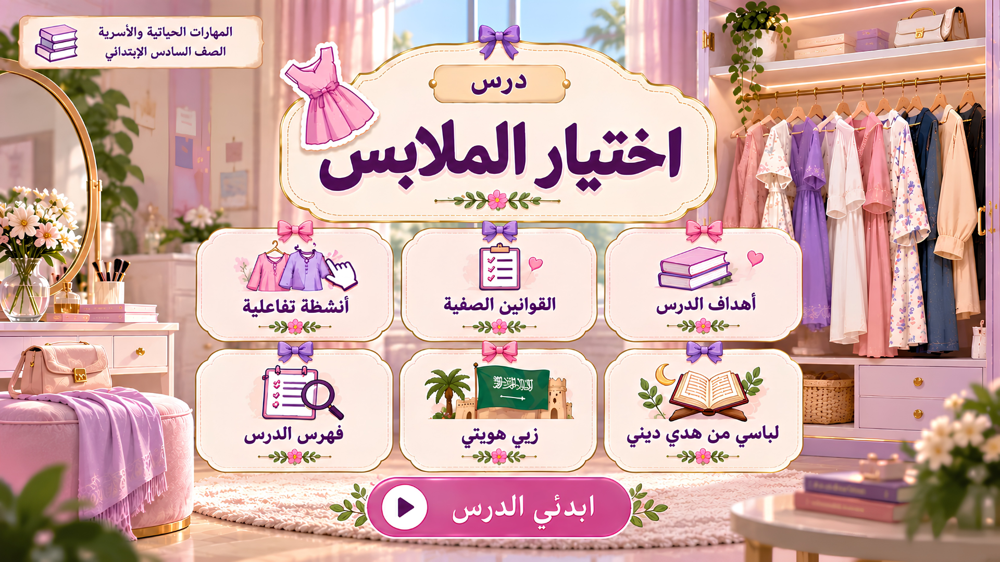
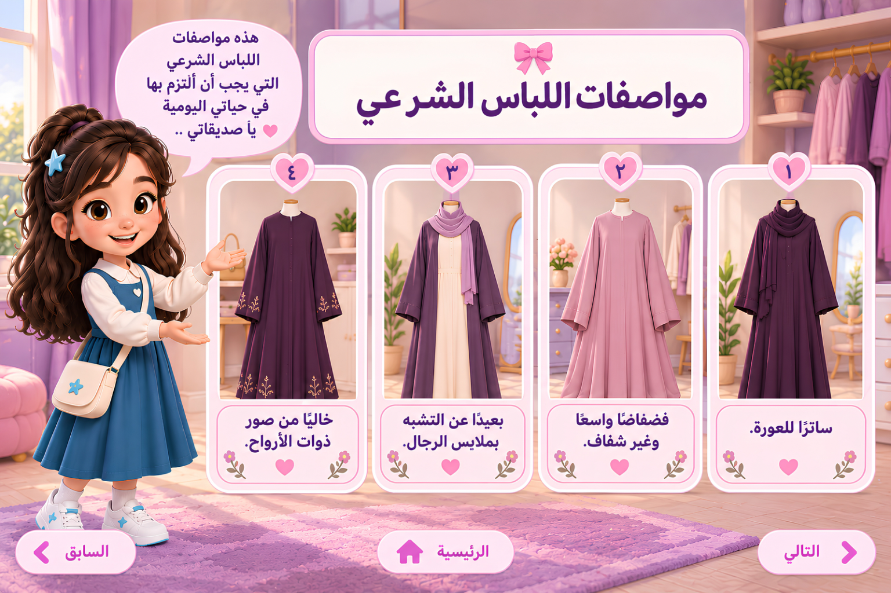
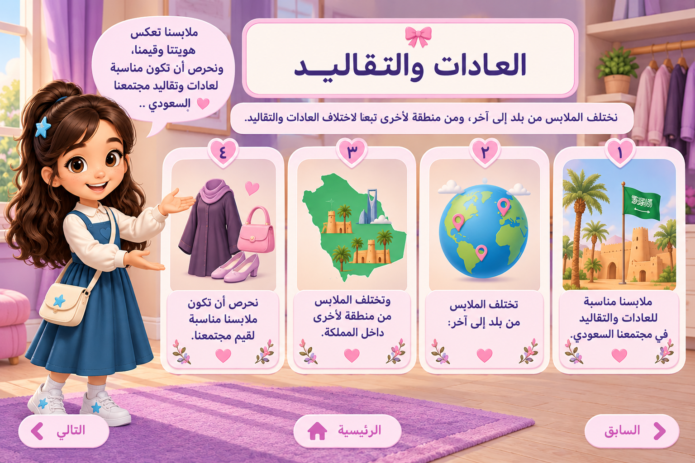
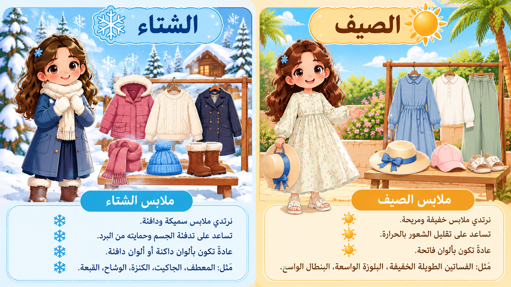
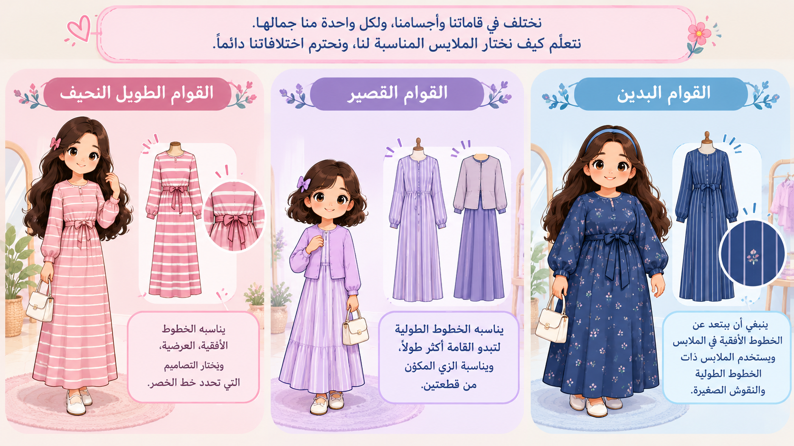

🧒🏻
مرحلة الطفولة
ملابس ساترة ومريحة تساعد على الحركة واللعب.

المهارات الحياتية والأسرية | الصف السادس الابتدائي


تتميز المملكة العربية السعودية بتنوع الأزياء فيها، واختلافها حسب المناطق. هيا نرسم الزي التراثي الذي تشتهر به منطقتنا.
أعتز بهويتي الوطنية، وأحافظ على الزي السعودي، وأعبّر عن انتمائي لوطني.
نشاط تفاعلي مستوحى من قيمة الاعتزاز بالهوية الوطنية الواردة في الكتاب.

اضغطي على قطعة الملابس، ثم اختاري الفصل المناسب لها.
هيا نفكّر معًا في سبب اختيار الألوان الفاتحة في فصل الصيف.
عند اختيار ملابسنا، نراعي أن تكون مناسبة لأعمارنا، ومريحة، وساترة، وتلائم احتياجاتنا.
ملابس ساترة ومريحة تساعد على الحركة واللعب.
ملابس ساترة تناسب العمر والنشاط والمناسبة.
ملابس ساترة ومريحة يسهل ارتداؤها وتناسب الاحتياجات.
ما الذي ينبغي مراعاته عند اختيار الملابس؟
تتنوع ألوان البشرة، وتختلف الألوان التي نحب ارتداءها. جرّبي تنسيق ألوان الملابس واختاري ما يناسب ذوقك.
اختاري درجة البشرة ثم لون الفستان، وشاهدي التنسيق.
بنفسجي هادئ

نختار الملابس التي تمنحنا الراحة، وتناسب مقاساتنا، وتكون ساترة وفضفاضة. لكل جسم طبيعته، وجميع الأجسام تستحق الاحترام.
فستان فضفاض ومريح
اضغطي على أحد التصميمين لمشاهدة اختلاف اتساع الفستان.
ما أهم ما نراعيه عند اختيار الملابس؟

أريد ملابس مريحة وقطنية لأرتديها في المنزل. أي نوع أختار؟
هيا نراجع ما تعلمناه في درس «اختيار الملابس» من خلال أسئلة قصيرة. اختاري الإجابة الصحيحة، وستظهر لكِ النتيجة في النهاية.
اختيار الملابس المناسبة يجمع بين الستر والراحة ومراعاة المناسبة.
سيُضاف محتوى هذا القسم من الكتاب المدرسي المعتمد.